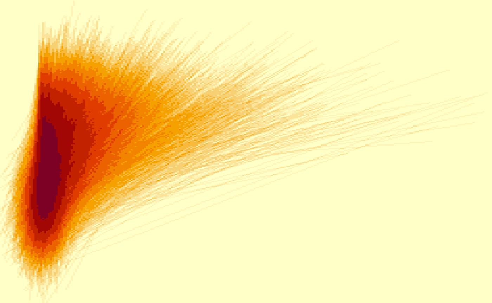
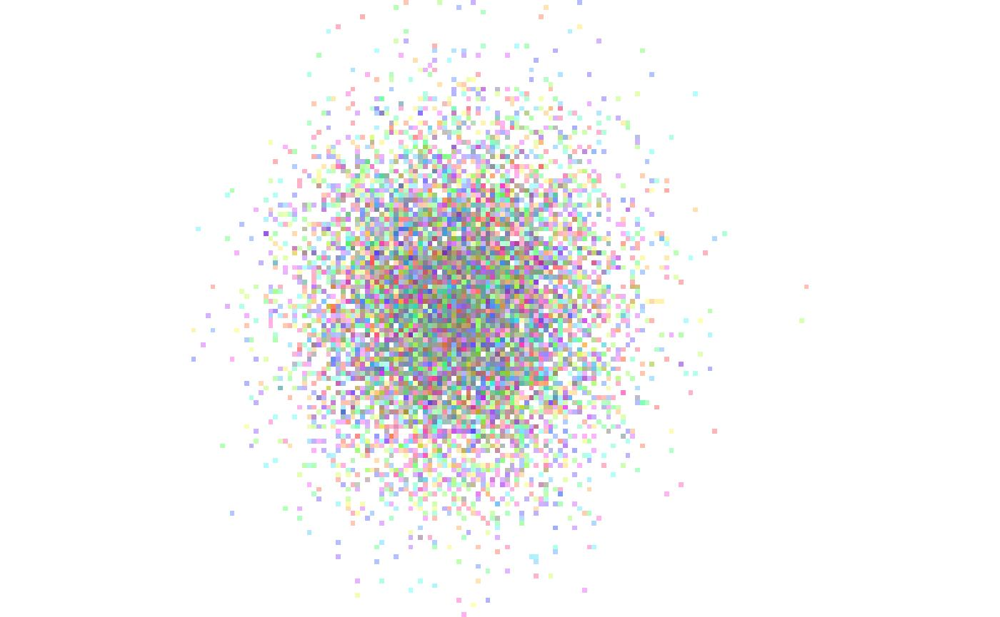
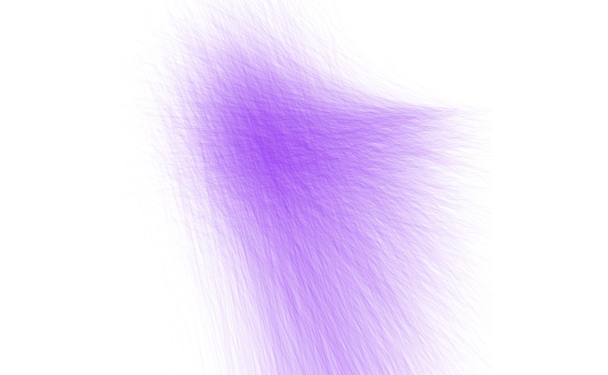
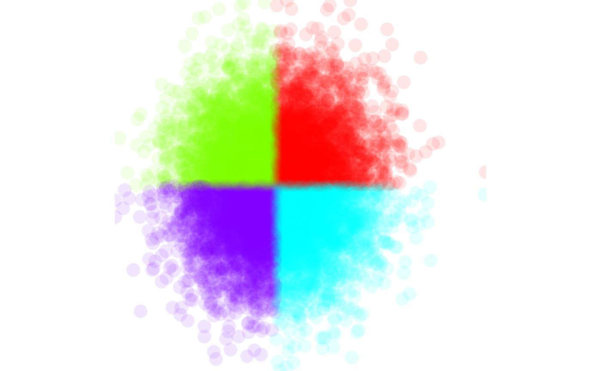
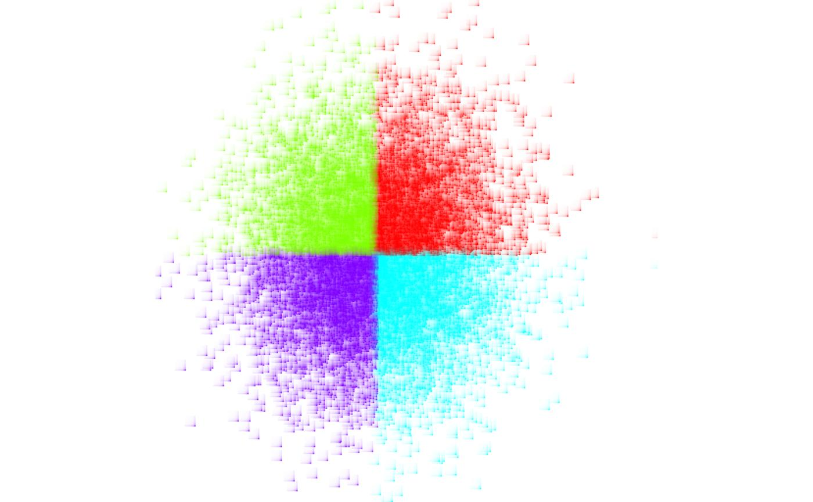
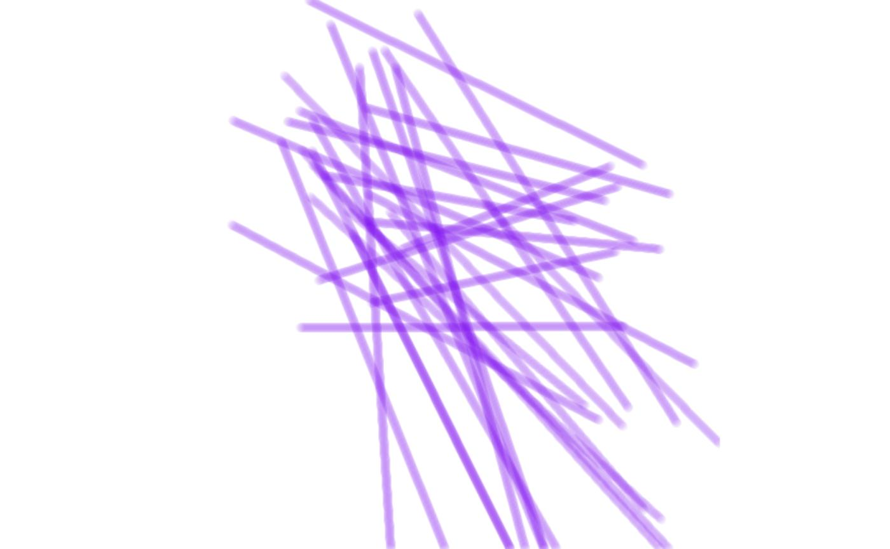
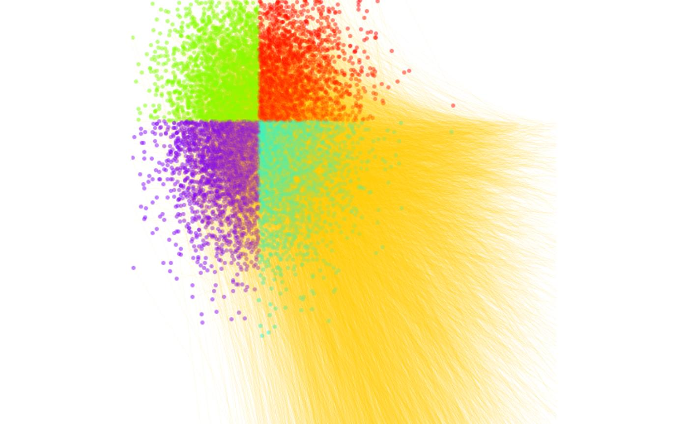

low_level_interface.RmdThis vignette gives an overview and comprehensive examples of using
the low-level API of scattermore. Using the API you can do
many more things than just plotting points; mainly
scattermore supports plotting both 2D-histograms (density
plots) and image rasters from both points and lines (and possibly other
shapes in the future), modifying and expanding both histograms and image
rasters with kernels, and blending all of these using
ordering-independent blending methods.
The low-level API operates mostly on plain R matrices or arrays; these are formatted in:
One typically starts with either generating the densities or RGBWT rasters, and successively moves lower in the list towards the usual integer RGBA, which may be e.g. converted to a normal R raster.
RGBWT format is specific to scattermore, standing for
Red Green Blue Weight Transparency. It is similar to a floating-point
RGBA with premultiplied alpha: channels R, G, B behave just like in
RGBA, channel T is equivalent to (1-A), and channel W (initially
equivalent to A) collect the total amount of “paint” that the given
pixel has accumulated. With this, blending of layers is guaranteed to be
order independent: values in channels RGBW are added together, and
values in T are multiplied. To convert RGBWT back to RGBA, one computes
A=(1-T), and divides the channels R,G,B by the value of W.
Let us first generate a small random dataset of points and directions:
We can convert the density data to an integer density map:
pdens <- scattermore::scatter_points_histogram(pts, out_size=c(128,128))
par(mar = c(0,0,0,0), bg='white')
image(pdens)The same can be done for plotting the densities over the lines:
ldens <- scattermore::scatter_lines_histogram(cbind(pts, pts2), out_size=c(256,256))
par(mar = c(0,0,0,0), bg='white')
image(ldens)Densities are simple matrices, so in order to improve the visualization you can apply the usual R math functions to their contents:
Colored stuff is usually plotted to a 5-channel RGBWT raster format, which eliminates the typical overplotting artifacts. This is later converted to either RGBA or a standard R rasters for plotting.
We can plot the points with a single color to the RGBWT format using
scatter_points_rgbwt. We also show how to fix the precise
displayed area using xlim and ylim.
# TODO xlim docs
rgbwt <- scatter_points_rgbwt(pts, out_size=c(512,512), xlim=c(-3,3), ylim=c(-3,3))
rstr <- rgba_int_to_raster(rgbwt_to_rgba_int(rgbwt))
par(mar=c(0,0,0,0), bg='white')
plot(rstr)
You can specify a single color (possibly with alpha channel) for plotting; here we force a lower resolution and turn off pixel interpolation to show the transparency effect more precisely:
rgbwt <- scatter_points_rgbwt(pts, out_size=c(128,128), RGBA=col2rgb('#8010f010', alpha=T))
rstr <- rgba_int_to_raster(rgbwt_to_rgba_int(rgbwt))
par(mar=c(0,0,0,0), bg='white')
plot(rstr, interpolate=F)The RGBA parameter may also assign individual colors to
each pixel:
rgbwt <- scatter_points_rgbwt(pts, out_size=c(128,128), RGBA=col2rgb(rainbow(n, alpha=0.3), alpha=T))
rstr <- rgba_int_to_raster(rgbwt_to_rgba_int(rgbwt))
par(mar=c(0,0,0,0), bg='white')
plot(rstr, interpolate=F)For plotting large clusters that share the colors, arguments
map and palette allow for simpler and more
efficient specification of the plotting:
clusters <- 1 + (pts[,1] < 0) + 2 * (pts[,2] < 0)
rgbwt <- scatter_points_rgbwt(pts, out_size=c(128,128), palette=col2rgb(rainbow(4, alpha=0.2), alpha=T), map=clusters)
rstr <- rgba_int_to_raster(rgbwt_to_rgba_int(rgbwt))
par(mar=c(0,0,0,0), bg='white')
plot(rstr, interpolate=F)
Colored RGBWT lines are plotted similarly:
#TODO as.vector
rgbwt <- scatter_lines_rgbwt(cbind(pts, pts2), out_size=c(512,512),
xlim=c(-3,7), ylim=c(-5,2),
RGBA=as.vector(col2rgb('#8010f005', alpha=T)))
rstr <- rgba_int_to_raster(rgbwt_to_rgba_int(rgbwt))
par(mar=c(0,0,0,0), bg='white')
plot(rstr)Scattermore takes a distinctive approach to plotting points that are larger than a single pixel – these are not plotted immediately as large, but instead start as single-pixel “centers” and are later expanded using a kernel function. The expansion is faster for plots that contain huge values of individual points, because the “expansion” operations is aggregated for multiple pixels, and the operation is much more computationally regular, giving additional speedups.
First, let’s increase the resolution of the example from above:
rgbwt <- scatter_points_rgbwt(pts, out_size=c(512,512), palette=col2rgb(rainbow(4, alpha=0.5), alpha=T), map=clusters)
rstr <- rgba_int_to_raster(rgbwt_to_rgba_int(rgbwt))
par(mar=c(0,0,0,0), bg='white')
plot(rstr)
This is sub-optimal because the pixels are too small; to fix that we can expand them:
rgbwt <- scatter_points_rgbwt(pts, out_size=c(512,512), palette=col2rgb(rainbow(4, alpha=0.1), alpha=T), map=clusters)
rgbwt <- apply_kernel_rgbwt(rgbwt, 'circle', radius=10)
rstr <- rgba_int_to_raster(rgbwt_to_rgba_int(rgbwt))
par(mar=c(0,0,0,0), bg='white')
plot(rstr)There are also other expansion options (such as gauss
and square). You can also supply your own kernel in order
to plot different shapes of pixels:
rgbwt <- scatter_points_rgbwt(pts, out_size=c(512,512), palette=col2rgb(rainbow(4, alpha=1), alpha=T), map=clusters)
rgbwt <- apply_kernel_rgbwt(rgbwt, 'own',
mask=outer(1:11, 1:11, Vectorize(function(x,y) 1/(x*y))))
rstr <- rgba_int_to_raster(rgbwt_to_rgba_int(rgbwt))
par(mar=c(0,0,0,0), bg='white')
plot(rstr)
The same can be applied to line data to get thicker lines (we limit the number of lines for simplicity here):
rgbwt <- scatter_lines_rgbwt(cbind(pts, pts2)[1:30,], out_size=c(512,512),
xlim=c(-3,7), ylim=c(-5,2),
RGBA=as.vector(col2rgb('#8010f010', alpha=T)))
rgbwt <- apply_kernel_rgbwt(rgbwt, 'circle', radius=5)
rstr <- rgba_int_to_raster(rgbwt_to_rgba_int(rgbwt))
par(mar=c(0,0,0,0), bg='white')
plot(rstr)
Gaussian kernels are excellent for smoothing out point and line densities. As the main change, we need to use the histogram-specific kernel function:
pdens <- scattermore::scatter_points_histogram(pts, out_size=c(256,256), xlim=c(-3,3), ylim=c(-3,3))
pdens <- apply_kernel_histogram(pdens, 'gauss', radius=10)
par(mar = c(0,0,0,0), bg='white')
image(pdens, col=rainbow(100))
The calculated densities can be trivially used for overlaying the
images with contours. (N. B. that the default gaussian kernels are not
“balanced” and increase the total weight present in the graphics; you
may still supply a unit weight kernel using the own
parameter.)
Specific functionality is provided for converting densities to colorized “heat” maps, converting the histogram to RGBWT format. This is useful for later blending with other RGBWT data.
pdens <- scattermore::scatter_points_histogram(pts, out_size=c(512,512))
pdens <- apply_kernel_histogram(pdens, 'circle', radius=10)
rgbwt <- histogram_to_rgbwt(log1p(pdens), RGBA=col2rgb(topo.colors(100)[10:100], alpha=T))
rstr <- rgba_int_to_raster(rgbwt_to_rgba_int(rgbwt))
par(mar=c(0,0,0,0), bg='white')
plot(rstr)Functions for blending (“merging”) the RGBWT and RGBA layers are available with one substantial difference: - Merging RGBWT layers never causes overplotting. The layers are merged to produce a weighted mean, with neither being “on top”. - Merging RGBA layers explicitly covers one layer by the other one, depending on the alpha value.
To showcase this functionality, we show the difference between truly merging and overlaying our data. First, it is necessary to manually ensure that the data is plotted at the same bitmap size with the same coordinates:
rgbwt1 <- scatter_lines_rgbwt(cbind(pts, pts2), out_size=c(512,512),
xlim=c(-3,7), ylim=c(-5,2),
RGBA=as.vector(col2rgb('#ffcc0010', alpha=T)))
rgbwt2 <- scatter_points_rgbwt(pts, out_size=c(512,512),
xlim=c(-3,7), ylim=c(-5,2),
palette=col2rgb(rainbow(4, alpha=0.5), alpha=T), map=clusters)
rgbwt2 <- apply_kernel_rgbwt(rgbwt2, 'circle', radius=3)We now merge the data as RGBWT, without overplotting either layer.
Notably, the merge_rgbwt operation is associative and
commutative (except for small numerical imperfections).
rgbwt <- merge_rgbwt(list(rgbwt1, rgbwt2))
rstr <- rgba_int_to_raster(rgbwt_to_rgba_int(rgbwt))
par(mar=c(0,0,0,0), bg='white')
plot(rstr)In this case, neither the lines and points is “in foreground”, the colors are correctly merged according to the total amount of “ink” applied to each point in the canvas.
If blending in RGBA format, the colors will overlay depending on the order. First with lines on top:
rgbwt <- blend_rgba_float(list(rgbwt_to_rgba_float(rgbwt1), rgbwt_to_rgba_float(rgbwt2)))
rstr <- rgba_int_to_raster(rgba_float_to_rgba_int(rgbwt))
par(mar=c(0,0,0,0), bg='white')
plot(rstr)
…and with points on top:
rgba <- blend_rgba_float(list(rgbwt_to_rgba_float(rgbwt2), rgbwt_to_rgba_float(rgbwt1)))
rstr <- rgba_int_to_raster(rgba_float_to_rgba_int(rgba))
par(mar=c(0,0,0,0), bg='white')
plot(rstr)For demonstration, we produce a huge, colorful, truly psychidelic graphics that combines all of the elements:
# lines
rgbwt1 <- scatter_lines_rgbwt(cbind(pts, pts2),
out_size=c(512,512), xlim=c(-3,7), ylim=c(-5,2),
RGBA=as.vector(col2rgb('#fff0c018', alpha=T)))
# points
rgbwt2 <- scatter_points_rgbwt(pts,
out_size=c(512,512), xlim=c(-3,7), ylim=c(-5,2),
palette=col2rgb(rainbow(4, alpha=0.5), alpha=T), map=clusters)
rgbwt2 <- apply_kernel_rgbwt(rgbwt2, 'circle', radius=3)
# background density of the line endpoints
pdens <- scatter_points_histogram(pts2,
out_size=c(512,512), xlim=c(-3,7), ylim=c(-5,2))
pdens <- apply_kernel_histogram(pdens, 'gauss', radius=10)
rgbwt3 <- histogram_to_rgbwt(sqrt(pdens), RGBA=col2rgb(topo.colors(100)[20:100], alpha=T))
rgba <- blend_rgba_float(list(
rgbwt_to_rgba_float(merge_rgbwt(list(rgbwt1, rgbwt2))),
rgbwt_to_rgba_float(rgbwt3)
))
rstr <- rgba_int_to_raster(rgba_float_to_rgba_int(rgba))
par(mar=rep(2,4), bg='white')
plot(c(), xlim=c(-3,7), ylim=c(-5,2))
rasterImage(t(rstr), xleft=-3, xright=7, ybottom=-5, ytop=2)
# a trick is required to flip the bitmap vertically
contour(seq(-3,7,length.out=512), y=seq(-5,2,length.out=512), pdens[,ncol(pdens):1], add=T, levels=c(2,10))Running the graphics through the R plotting pipeline may result in losing pixel-perfect details by interpolating to a slightly imprecise raster. One may save RGBA format to PNG graphics directly, which gives pixel-perfect output together with some other properties (such as preserved transparency).
png::writePNG(rgba_float_to_rgba_int(rgba)/255, "myPicture.png")